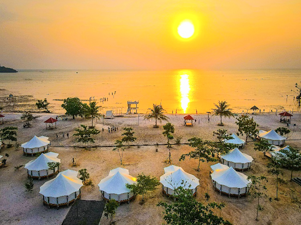
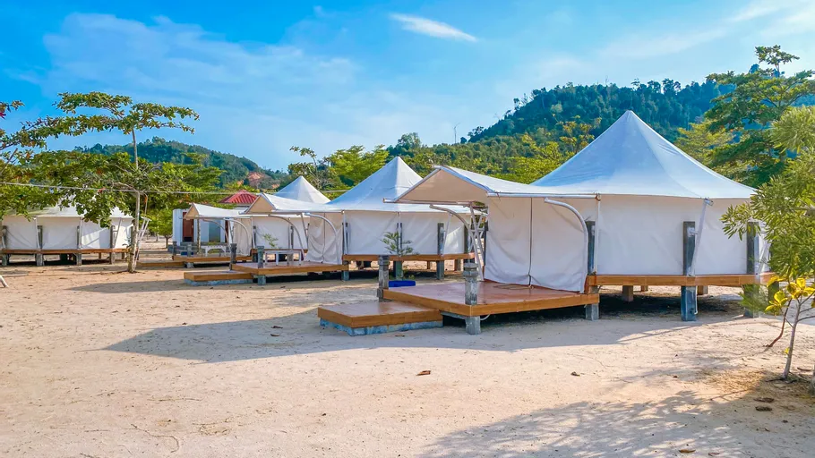
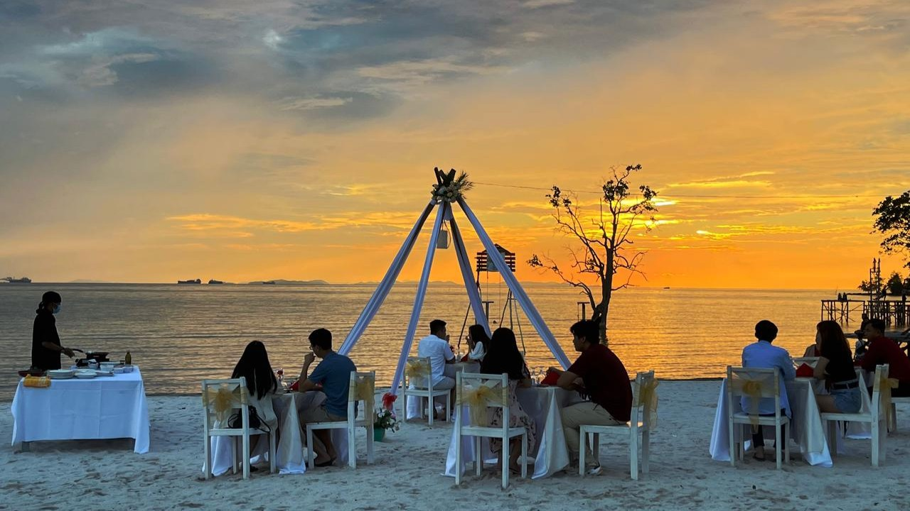

Selamat Datang di
Dimas Wisata
Pantai Viovio merupakan salah satu destinasi wisata populer di kawasan Jembatan 5 Barelang, Batam. Pantai ini menawarkan hamparan pasir putih yang lembut, air laut biru jernih, serta pemandangan alam yang menenangkan. Suasana di sekitar pantai terasa damai dengan angin laut yang sejuk dan pepohonan rindang di tepi pantai, menjadikannya tempat ideal untuk bersantai bersama keluarga atau teman. Keindahan alamnya semakin memikat saat sore hari, ketika matahari terbenam menciptakan gradasi warna oranye keemasan di langit.
Selain panorama alamnya yang memukau, Pantai Viovio juga memiliki dermaga kayu panjang dan ayunan pantai yang menjadi spot foto favorit wisatawan. Fasilitas seperti gazebo, warung makan, dan area bermain anak turut menambah kenyamanan pengunjung. Destinasi ini sangat cocok bagi pecinta alam, fotografer, maupun wisatawan yang ingin menikmati keindahan laut Batam dengan suasana yang tenang dan romantis. Pantai Viovio benar-benar menghadirkan pesona tropis yang menggambarkan keindahan pesisir Indonesia.
Jangan lewatkan pengalaman seru berwisata ke Pantai Vio Vio!

Pantai Vio Vio
Daya Tarik Wisata
- Hamparan pasir putih yang berkilau di bawah sinar matahari
- Petualangan snorkeling dan diving di laut jernih penuh terumbu karang
- Keanekaragaman biota laut yang menakjubkan
- Sajian kuliner laut segar khas pesisir Batam
- Penginapan nyaman dengan pemandangan laut tropis
Rencana Kegiatan Wisata
- Registrasi dan sambutan hangat dari tim pemandu
- Perjalanan menuju lokasi wisata dengan panorama alam yang memukau
- Eksplorasi pantai, snorkeling, dan sesi foto di spot terbaik
- Makan siang bersama dengan hidangan laut segar
- Waktu bebas untuk bersantai sebelum kembali ke titik awal

Keindahan Villa di Pantai Vio Vio

Pantai dengan spot sunset yang bagus